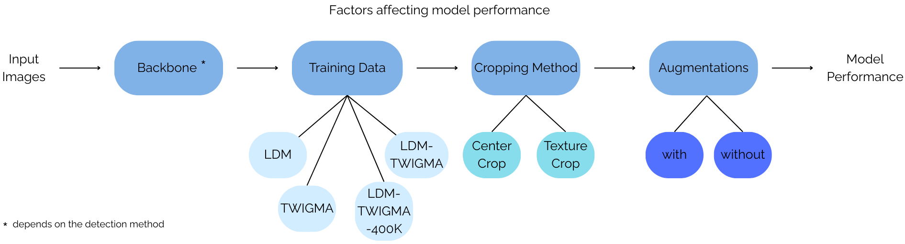
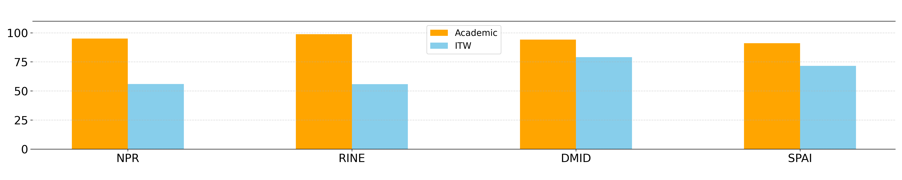
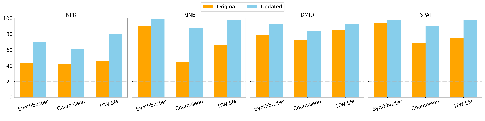

Abstract
As generative Artificial Intelligence (AI) advances, the realism of synthesized imagery has reached a threshold capable of deceiving even vigilant human observers. Yet, while current AI-Generated Image Detection (AID) approaches perform exceptionally well on controlled benchmark datasets, they struggle significantly with real-world variations. To study this behavior we introduce the ITW-SM dataset, comprising a curated collection of real and AI-generated images originating from major social media platforms. We employ it to analyze the effects of key design choices typically considered when building a detector, involving its architecture, pre-trained latent spaces, training data as well as pre-processing approaches. We indicate that naively scaling the pre-training stage or opting for more training data does not always guarantee better detection performance. Instead, our work reveals that it is crucial to optimize each design choice to enable the processing pipeline propagate and effectively analyze both low-level traces as well as high-level image semantics. Building upon our findings, we achieve a substantial average improvement of 26.87% in AUC across multiple state-of-the-art detection approaches and under real-world conditions, providing a roadmap for developing more resilient detectors.
Paper Highlights
- A systematic experimental evaluation that reveals strengths and weaknesses of various AID approaches under real-world conditions.
- The introduction of ITW-SM, a new in-the-wild AID benchmark dataset collected from four major social media platforms.
- An impact analysis of training data, pre-trained latent spaces, model architectures, pre-processing stages, and data augmentations on AID performance.
- An average improvement of 26.87% in AUC across multiple detection approaches under real-world conditions.
Methodology
We define an experimental framework for systematically studying the effect of four key components typically considered when building an AID model:

- Training Data Composition: Evaluating how dataset diversity (e.g., combining benchmark data with in-the-wild TWIGMA data) affects generalization.
- Backbone Architectures: Assessing different vision encoders (e.g., CLIP, BLIP2, DINO-V2) for their ability to capture low-level artifacts vs. high-level semantics.
- Cropping Strategies: Comparing resizing, center cropping, 10-cropping, and texture-based cropping to optimally preserve generation traces.
- Data Augmentations: Applying geometric and noise transformations to simulate real-world distortions.
Core Results
Our findings confirm that while most methods achieve strong results on curated benchmark datasets, their performance degrades significantly when applied to in-the-wild AI-generated images.

Impact of Design Choices
By systematically updating AID models with optimal design choices, we achieved a substantial average improvement of 26.87% in AUC across various state-of-the-art detection approaches in real-world conditions.

Detailed Ablation Results
Click the tabs below to explore the detailed results of each ablation study. All values are reported as AUC / AP.
Key Findings
Backbones: DINO-V2 significantly outperforms CLIP-based encoders for AID tasks due to its self-supervised training focused on visual understanding rather than image-text semantic alignment.
Training Data: Retraining on in-the-wild collected data consistently benefits performance, though end-to-end models benefit more from scale than models reliant on pre-trained spaces.
Pre-processing: TextureCrop preserves critical high-frequency synthetic artifacts in high-resolution images much better than standard center cropping or resizing.
Augmentations: Incorporating augmentations simulating compression and noise is vital to bridge the gap between training and real-world data.
Acknowledgements
This work is funded by the Horizon Europe projects vera.ai (GA No. 101070093), AI-CODE (GA No. 101135437), and ELIAS (GA No. 101120237). Computational resources were provided by the National Infrastructures for Research and Technology GRNET and funded by the EU Recovery and Resiliency Facility.
BibTeX
@inproceedings{konstantinidou2026navigating,
title={Navigating the Challenges of AI-Generated Image Detection in the Wild: What Truly Matters?},
author={Konstantinidou, Despina and Karageorgiou, Dimitrios and Koutlis, Christos and Papadopoulou, Olga and Schinas, Emmanouil and Papadopoulos, Symeon},
booktitle={The 5th ACM International Workshop on Multimedia AI against Disinformation (MAD '26)},
year={2026},
doi={10.1145/3810988.3812665},
url={https://arxiv.org/abs/2507.10236}
}